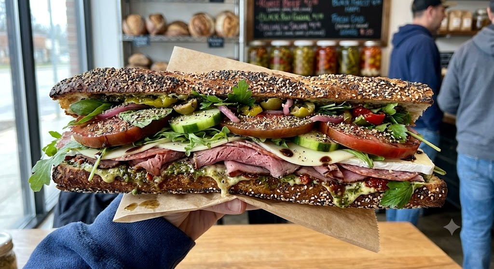

Baguette Recipes

This is the type of Baguette we all want to smash at some point in our life right?? The following recipe is for everyone!!
Ingridients
- 1 fresh baguette (preferably with sesame seeds or grains)
- 2 tbsp green basil pesto
- 1 tbsp balsamic glaze (crema di balsamico)
- 100g roast beef or premium salami (thinly sliced)
- 1 ball of fresh mozzarella or camembert (sliced)
- 1 large tomato (cut into thick slices)
- ½ cucumber (sliced)
- A handful of arugula (rocket) or fresh spinach
- A few fresh parsley leaves
- Optional toppings: Pickled olives, pepperoncini, and thin red onion rings
- Seasoning: Salt, coarse black pepper, and dried Italian herbs
Steps
- Prepare the baguette: Slice the baguette lengthwise using a bread knife, but don't cut it completely through so it holds the fillings better.
- Spread the base: Generously spread the green basil pesto on the bottom half of the baguette.
- Layer the meat: Place the thinly sliced roast beef or salami on top of the pesto, ruffling it slightly to create volume.
- Add the cheese: Evenly arrange the mozzarella or camembert slices over the meat.
- Pack the veggies: Layer the cucumber slices first, followed by the thick tomato slices, and then add your onion rings, olives, or pepperoncini.
- Season it up: Season the tomatoes directly with a pinch of salt, pepper, and Italian herbs, then drizzle the balsamic glaze over them.
- The greens: Top everything off with a fresh layer of arugula and parsley.
- Press & Serve: Carefully press the baguette together, cut it in half if you like, and enjoy your sandwich!
Home